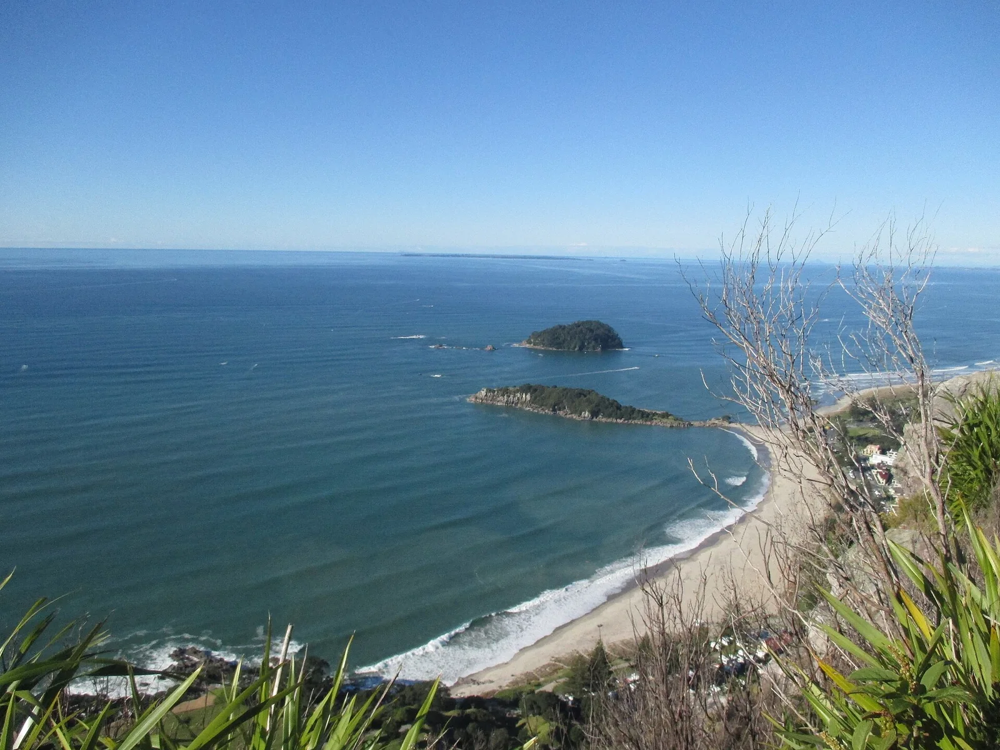

Mount Maunganui — Main Beach
Bay of Plenty, Nouvelle-Zélande · surf

Une longue plage au pied du mont Maunganui. Un arrêt côtier autour de Tauranga, dans la Bay of Plenty.
- Lieu
- Bay of Plenty, Nouvelle-Zélande
- Niveau
- Variable selon les conditions
- Activités
- surf
- Type d'eau
- Mer / océan
- Coordonnées
- -37.63, 176.18 (position approximative du secteur)
Ouvrir dans Ocean Buddy Télécharger sur l'App Store
Source : Tourism New Zealand.